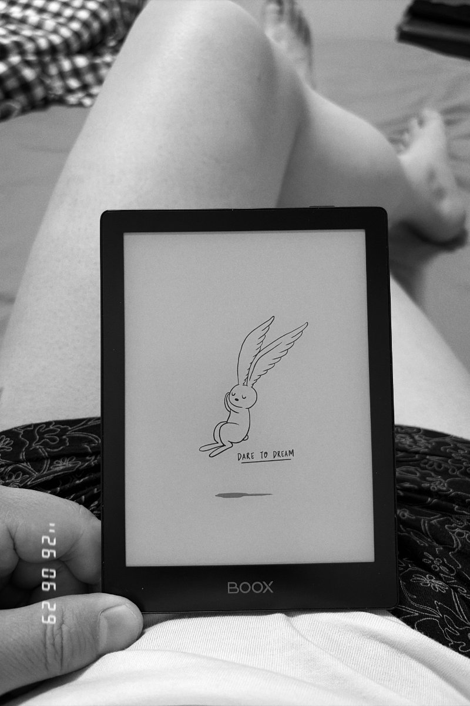
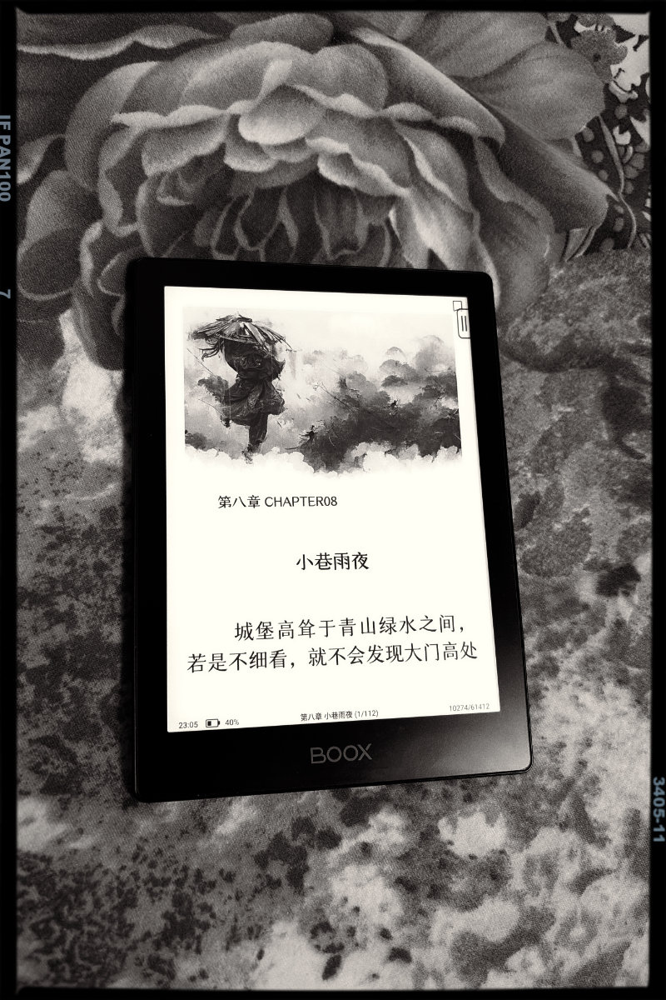
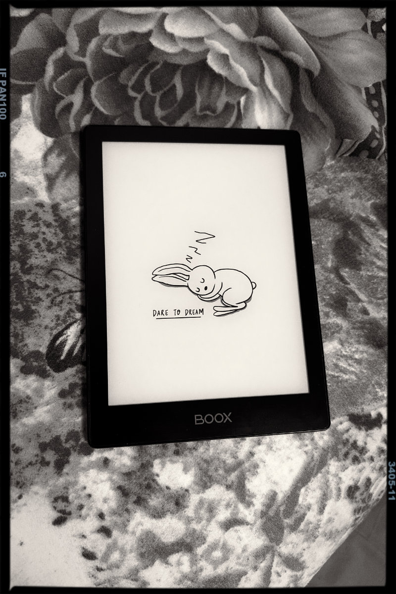

电纸书我很早就开始用。最早从亚马逊的 Kindle 7 开始，kindle 虽然好，但系统闭塞，操作起来稍显麻烦。我2024年11月份买了这款国产电纸书，文石 BOOK-Poke6 ，开放生态，可以安装微信读书、豆瓣读书等等。
但用过一段时间后，发觉还是自带书库的显示效果最好。对我来说，与其切换应用去看微信读书、豆瓣读书。还不如把电子书在线上传到本地书库。不得不说，这个同步传送电子书的功能太好用了。不管是手机端，平板端还是网页端都能无缝衔接。
另外，从显示效果上，虽然 kindle 还是略胜一筹，但国产墨水屏已经到了可用的阶段。至少在纯文字显示效果上已经很舒服了，而且还可以自定义上传字体、行距调整等，用起来很方便。

